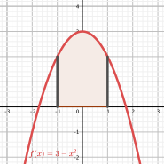
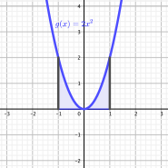
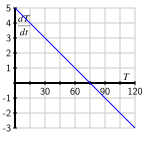
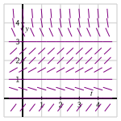
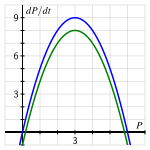

Appendix C Answers to Selected Exercises
This appendix contains answers to all non-WeBWorK exercises in the text.
4 The Definite Integral
4.3 The definite integral
4.3.6 Exercises
4.3.6.10.
Answer.
-
The total change in position, \(P\text{,}\) is \(P = \int_0^1 v(t) \, dt + \int_1^3 v(t) \, dt + \int_3^4 v(t) \, dt = \int_0^4 v(t) \, dt\text{.}\)
-
\(P = \int_0^4 v(t) \, dt \approx 2.665\text{.}\)
-
The total distance traveled, \(D\text{,}\) is \(D = \int_0^1 v(t) \, dt - \int_1^3 v(t) \, dt + \int_3^4 v(t) \, dt\text{.}\)
-
\(D \approx 8.00016\text{.}\)
4.3.6.11.
4.3.6.12.
Answer.
-
\(A_1 = \int_{-1}^{1} (3-x^2) \, dx\text{.}\)

-
\(A_2 = \int_{-1}^{1} 2x^2 \, dx\text{.}\)

-
The exact area between the two curves is \(\int_{-1}^{1} (3-x^2) \, dx - \int_{-1}^{1} 2x^2 \, dx\text{.}\)
-
Use the sum rule for definite integrals over the same interval.
5 Evaluating Integrals
5.6 Numerical integration
5.6.7 Exercises
5.6.7.5.
Answer.
-
\(u\)-substitution fails since there’s not a composite function present; try showing that each of the choices of \(u = x\) and \(dv = \tan(x) \, dx\text{,}\) or \(u = \tan(x)\) and \(dv = x \, dx\text{,}\) fail to produce an integral that can be evaluated by parts.
-
-
\(\displaystyle L_4 = 0.25892\)
-
\(\displaystyle R_4 = 0.64827\)
-
\(\displaystyle M_4 = 0.41550\)
-
\(\displaystyle T_4 = \frac{L_4 + R_4}{2} = 0.45360\)
-
\(\displaystyle S_8 = \frac{2M_4 + T_4}{3} = 0.42820\)
-
5.6.7.6.
5.6.7.7.
Answer.
-
\(\int_0^{60} r(t) \, dt \text{.}\)
-
\(\int_0^{60} r(t) \, dt \gt M_3 = 204000\text{.}\)
-
\(\int_0^{60} r(t) \, dt \approx S_6 = \frac{619000}{3} \approx 206333.33\text{.}\)
-
\(\frac{1}{60} S_6 \approx 3438.89 \text{;}\) \(\frac{2000+2100+2400+3000+3900+5100+6500}{7} = \frac{25000}{7} \approx 3571.43 \text{.}\) each estimates the average rate at which water flows through the dam on \([0,60]\text{,}\) and the first is more accurate.
6 Using Definite Integrals
6.4 Physics applications: work, force, and pressure
6.4.6 Exercises
6.4.6.6.
6.4.6.7.
6.5 Improper integrals
6.5.6 Exercises
6.5.6.11.
6.5.6.12.
7 Differential Equations
7.1 An introduction to differential equations
7.1.6 Exercises
7.1.6.7.
Answer.
-
\(\frac{dT}{dt}\vert_{T=105} = -2\text{;}\) when \(T = 105\text{,}\) the coffee’s temperature is decreasing at an instantaneous rate of \(-2\) degrees F per minute.
-
\(T(1) \approx 103\) degrees F.
-

-
Room temperature is \(75\) degrees F.
-
Substitute \(T(t) = 75 + 30e^{-t/15}\) in for \(T\) in the differential equation \(\frac{dT}{dt}= -\frac1{15}T+5\) and verify the equality holds; \(T(0) = 75 + 30e^0 = 75 + 30 = 105\text{;}\) \(T(t) = 75 + 30e^{-t/15} \to 75\) as \(t \to \infty\text{.}\)
7.1.6.8.
7.1.6.9.
Answer.
-
\(1 \lt P \lt 3\text{.}\)
-
\(P\) will not change at all.
-
The population will increase toward \(P = 3\) with \(P\) always being between \(1\) and \(3\text{.}\)
-
There’s a maximum threshold of \(P = 3\text{.}\)
7.2 Qualitative behavior of solutions to differential equations
7.2.5 Exercises
7.2.5.6.
7.2.5.7.
Answer.
-

-
Any solution curve that starts with \(P(0) \gt 3\) will decrease to \(P(t) = 3\) as \(t \to \infty\text{;}\) any curve that starts with \(1 \lt P(0) \lt 3\) will increase to \(P(t) = 3\text{;}\) any curve that starts with \(0 \lt P(0) \lt 1\) will decrease to \(P(t) = 0\text{.}\)
-
\(P = 0\text{,}\) \(P = 1\text{,}\) and \(P = 3\text{.}\) \(P = 1\) is unstable; \(P = 0\) and \(P = 3\) are stable.
-
\(P(t) = 1\) is the threshold.
7.2.5.8.
Answer.
-
A graph of \(f\) against \(P\) is given in blue in the figure below. The equilibrium solutions are \(P=0\) (unstable) and \(P=6\) (stable).

-
\(\frac{dP}{dt} = g(P) = P(6-P)-1\) ; the equilibrium at \(P\approx 0.172\) is unstable; the equilibrium at \(P \approx 5.83\) is stable.
-
If \(P \lt \frac{6-\sqrt{32}}{2}\text{,}\) then the fish population will die out. If \(\frac{6-\sqrt{32}}{2} \lt P\text{,}\) then the fish population will approach \(\frac{6+\sqrt{32}}{2}\) thousand fish.
-
\(\frac{dP}{dt} = g(P) = P(6-P)-h \text{;}\) equilibrium solutions \(P = \frac{6+\sqrt{36-4h}}{2}, \ \frac{6-\sqrt{36-4h}}{2} \text{.}\)
-
\(9000\) fish; harvesting at that rate will maintain the number of fish we start with, provided it’s at least \(3000\text{.}\)
7.2.5.9.
Answer.
-
\(\frac{dy}{dt} = 20y\text{.}\)
-
\(\displaystyle \frac{dy}{dt} = 20y - C\frac{y}{2+y}\)
-
For positive \(y\) near \(0\text{,}\) \(M(y) = \frac{y}{2+y} \approx 0\text{;}\) for large values of \(y\text{,}\) \(M(y) = \frac{y}{2+y} \approx 1\text{.}\)
-
The only equilibrium solution is \(y = 0\text{,}\) which is unstable.
-
At least \(41\) cats.
7.3 Euler’s method
7.3.5 Exercises
7.3.5.6.
Answer.
-
Alice’s coffee: \(\frac{dT_A}{dt} \vert_{T = 100} = -0.5(30) = -15\) degrees per minute; Bob’s coffee: \(\frac{dT_B}{dt} \vert_{T = 100} = -0.1(30) = -3\) degrees per minute.
-
Consider the insulation of the containers.
-
Alice’s coffee:\begin{equation*} \frac{dT_A}{dt} = -0.5(T_A-(70+10\sin t))\text{,} \end{equation*}with the inital condition \(T_A(0) = 100\text{.}\)
\(t\) \(T_A(t)\) \(0.0\) \(100\) \(0.1\) \(98.5\) \(0.2\) \(97.12492\) \(0.3\) \(95.86801\) \(0.4\) \(94.72237\) \(\vdots\) \(\vdots\) \(49.6\) \(65.56715\) \(49.7\) \(65.48008\) \(49.8\) \(65.43816\) \(49.9\) \(65.44183\) \(50\) \(65.49103\) 
-
\(t\) \(T_A(t)\) \(0.0\) \(100\) \(0.1\) \(99.7\) \(0.2\) \(99.41298\) \(0.3\) \(99.13872\) \(0.4\) \(98.87689\) \(\vdots\) \(\vdots\) \(49.6\) \(69.39515\) \(49.7\) \(69.33946\) \(49.8\) \(69.29248\) \(49.9\) \(69.25467\) \(50\) \(69.22638\) 
-
Compare the rate of initial decrease and amplitude of oscillation.
7.3.5.7.
7.3.5.8.
7.4 Separable differential equations
7.4.4 Exercises
7.4.4.8.
7.4.4.9.
7.4.4.10.
7.4.4.11.

7.5 Modeling with differential equations
7.5.4 Exercises
7.5.4.6.
7.5.4.7.
7.5.4.8.
7.5.4.9.
Answer.
-
The inflow and outflow are at the same rate.
-
\(60\) grams per minute.
-
\(\displaystyle \frac{S(t)}{100} \frac{\text{grams}}{\text{gallon}}\)
-
\(\frac{3S(t)}{100} \frac{\text{grams}}{\text{minute}} \text{.}\)
-
\(\frac{dS}{dt} = 60 - \frac{3}{100} S \text{.}\)
-
\(S = 2000\) is a stable equilibrium solution.
-
\(S(t) = 2000 - 2000e^{-\frac{3}{100}t} \text{.}\)
-
\(S(t) \to 2000\text{.}\)
7.6 Population growth and the logistic equation
7.6.5 Exercises
7.6.5.5.
7.6.5.6.
7.6.5.7.
8 Taylor Polynomials and Taylor Series
8.1 Extending local linearization
8.1.6 Exercises
8.1.6.6.
Answer.
-
\(f(x)=\) \(\frac{1}{3}x^3 + \frac{1}{4}x^2 - 2x - 1\) \(f'(x)=\) \(x^2 + \frac{1}{2}x - 2\) \(f''(x)=\) \(2x + \frac{1}{2}\) \(f(0)=\) \(-1\) \(f'(0)=\) \(-2\) \(f''(0)=\) \(\frac{1}{2}\) -
See the bottom half of the table in the previous item.
-
\(T_1(x) = -1 - 2x\text{.}\)
-
\(f(x)=\) \(\frac{1}{3}x^3 + \frac{1}{4}x^2 - 2x - 1\) \(T_2(x)=\) \(c_0 + c_1 x + c_2 x^2\) \(f'(x)=\) \(x^2 + \frac{1}{2}x - 2\) \(T_2'(x)=\) \(c_1 + 2 c_2 x\) \(f''(x)=\) \(2x + \frac{1}{2}\) \(T_2''(x)=\) \(2 c_2\) \(f(0)=\) \(-1\) \(T_2(0)=\) \(c_0\) \(f'(0)=\) \(-2\) \(T_2'(0)=\) \(c_1\) \(f''(0)=\) \(\frac{1}{2}\) \(T_2''(0)=\) \(2c_2\) \(\displaystyle T_2(x) = \frac{1}{4}x^2 - 2x - 1\) -
\(T_2(x)\) is a better approximation of \(f(x)\) than \(T_1(x)\) and is better on a wider interval.
8.1.6.7.
Answer.
-
\(f(x)=\) \(\frac{1}{3}x^3 + \frac{1}{4}x^2 - 2x - 1\) \(T_3(x)=\) \(k_0 + k_1 x + k_2 x^2 + k_3 x^3\) \(f'(x)=\) \(x^2 + \frac{1}{2}x - 2\) \(T_3'(x)=\) \(k_1 + 2 k_2 x + 3 k_3 x^2\) \(f''(x)=\) \(2x + \frac{1}{2}\) \(T_3''(x)=\) \(2 k_2 + 6k_3 x\) \(f'''(x)=\) \(2\) \(T_3'''(x)=\) \(6k_3\) \(f(0)=\) \(-1\) \(T_3(0)=\) \(k_0\) \(f'(0)=\) \(-2\) \(T_3'(0)=\) \(k_1\) \(f''(0)=\) \(\frac{1}{2}\) \(T_3''(0)=\) \(2k_2\) \(f'''(0)=\) \(2\) \(T_3''(0)=\) \(6k_3\) -
\(T_3(x) = \frac{1}{3}x^3 + \frac{1}{4}x^2 - 2x - 1\text{.}\)
-
\(T_4(x) = T_3(x) = f(x)\text{.}\)
-
That the degree \(6\) approximation will be the original polynomial function itself.
8.2 Taylor polynomials
8.2.5 Exercises
8.2.5.7.
Answer.
-
\(T_4(x) = 2 - 3x - \frac{1}{2!}x^2 - \frac{3}{4!}x^4\text{.}\)
-
\(f(0.5) \approx T_4(0.5) = 2 - 3 \cdot 0.5 - \frac{1}{2!}(0.5)^2 - \frac{3}{4!}(0.5)^4 = 0.3671875 \text{.}\)
-
From \(T_4(x)\text{,}\) it follows\begin{align*} T_3(x) =\mathstrut \amp 2 - 3x - \frac{1}{2!}x^2 + 0x^3\\ T_2(x) =\mathstrut \amp 2 - 3x - \frac{1}{2!}x^2\\ T_1(x) =\mathstrut \amp 2 - 3x\text{.} \end{align*}
8.2.5.8.
Answer.
-
\(\displaystyle T_2(x) = 3 + 0(x-2) + \frac{1}{2!}(x-2)^2\)
-
\(f(x) = T_2(x)\text{.}\)
-
\(L(x) = T_1(x) = 3\text{,}\) so \(f\) has a horizontal tangent line at \(x = 2\text{,}\) which corresponds to its global minimum at \(x = 2\text{.}\)
8.2.5.9.
Answer.
-
\(\displaystyle T_6(x) = 1 - \frac{1}{2!}(x-\frac{1}{2})^2 + \frac{1}{4!}(x-\frac{1}{2})^4 - \frac{1}{6!}(x-\frac{1}{2})^6\)
-
\(T_6(x)\) appears to be the same as \(P_6(x-\frac{\pi}{2})\text{,}\) the degree \(6\) Taylor polynomial of \(\cos(x)\) centered at \(a = 0\text{,}\) shifted \(\frac{\pi}{2}\) units to the right.
-
Since \(\sin(x) = \cos(x - \frac{\pi}{2})\text{,}\) this tells us that the sine function is simply a shifted version of the cosine function (the cosine function shifted \(\frac{\pi}{2}\) units to the right).
8.2.5.10.
Answer.
-
\(\ln(1.5) = f(0.5) \approx T_5(0.5) = 1(0.5) - \frac{1}{2}(0.5)^2 + \frac{1}{3}(0.5)^3 - \frac{1}{4}(0.5)^4 + \frac{1}{5}(0.5)^5 = 0.4072916\overline{6}\text{.}\)
-
\(\ln(1.5) = g(1.5) \approx P_5(1.5) = 1(1.5-1) - \frac{1}{2}(1.5-1)^2 + \frac{1}{3}(1.5-1)^3 - \frac{1}{4}(1.5-1)^4 + \frac{1}{5}(1.5-1)^5 = 0.4072916\overline{6}\text{.}\)
-
The same. This occurs because \(f(x) = g(1+x)\text{.}\)
8.3 Geometric sums
8.3.6 Exercises
8.3.6.7.
Answer.
-
For \(S_n = 1 + 1 + \cdots + 1 \text{,}\)
-
\(S_2 = 1 + 1 = 2\text{,}\) \(S_3 = 1 + 1 + 1 = 3\text{,}\) \(S_4 = 4\text{,}\) and \(S_n = n\text{.}\)
-
The infinite sum \(S = 1 + 1 + \cdots + 1 + \cdots\) diverges.
-
-
For \(S_n = 1 - 1 + 1 - 1 + \cdots + (-1)^{n-1} \text{,}\)
-
\(S_2 = 1 - 1 = 0\text{,}\) \(S_3 = 1 - 1 + 1 = 1\text{,}\) \(S_4 = 1 - 1 + 1 - 1 = 0\text{,}\) \(S_5 = 1 - 1 + 1 - 1 + 1 = 1\text{,}\) and \(S_n = 0\) when \(n\) is even, and \(S_n = 1\) when \(n\) is odd.
-
The infinite sum \(S = 1 - 1 + 1 - 1 + \cdots + 1 - 1 + \cdots\) diverges.
-
-
For \(S_n = 1 + 2 + 4 + \cdots + 2^{n-1} \text{.}\)
-
\(S_2 = \frac{1-2^2}{-1} = 3\text{,}\) \(S_3 = \frac{1-2^3}{-1} = 7\text{,}\) and \(S_4 = \frac{1-2^4}{-1} = 15\text{,}\) so \(S_n = 2^n - 1\text{.}\)
-
The infinite geometric series \(1 + 2 + 4 + \cdots + 2^{n-1} + \cdots\) diverges.
-
8.3.6.8.
Answer.
-
\(h_1 = \left(\frac{3}{4}\right)h \text{.}\)
-
\(h_2 = \left(\frac{3}{4}\right)h_1 = \left(\frac{3}{4}\right)^2h \text{.}\)
-
\(h_3 = \left(\frac{3}{4}\right)h_2 = \left(\frac{3}{4}\right)^3h \text{.}\)
-
\(h_n = \left(\frac{3}{4}\right)h_{n-1} = \left(\frac{3}{4}\right)^nh \text{.}\)
-
The distance traveled by the ball is \(7h\text{,}\) which is finite.
8.3.6.9.
Answer.
-
\(30 \cdot 500 = 1500\) dollars.
-
Day Pay on this day Total amount paid to date \(1\) \(\dollar0.01\) \(\dollar0.01\) \(2\) \(\dollar0.02\) \(\dollar0.03\) \(3\) \(\dollar0.04\) \(\dollar0.07\) \(4\) \(\dollar0.08\) \(\dollar0.15\) \(5\) \(\dollar0.16\) \(\dollar0.31\) \(6\) \(\dollar0.32\) \(\dollar0.63\) \(7\) \(\dollar0.64\) \(\dollar1.27\) \(8\) \(\dollar1.28\) \(\dollar2.55\) \(9\) \(\dollar2.56\) \(\dollar5.11\) \(10\) \(\dollar5.12\) \(\dollar10.23\) -
\(\dollar0.01\left(2^{30}-1\right) = \dollar10,737,418.23 \text{.}\)
8.4 Taylor series
8.4.5 Exercises
8.4.5.8.
Answer.
-
\(T_4(x) = 0 - 1 \left(x - \frac{\pi}{2}\right) + \frac{0}{2!}\left(x - \frac{\pi}{2}\right)^2 + \frac{1}{3!}\left(x - \frac{\pi}{2}\right)^3 + \frac{0}{4!}\left(x - \frac{\pi}{2}\right)^4 \text{;}\) \(T(x) = 0 - 1 \left(x - \frac{\pi}{2}\right) + \frac{0}{2!}\left(x - \frac{\pi}{2}\right)^2 + \frac{1}{3!}\left(x - \frac{\pi}{2}\right)^3 + \frac{0}{4!}\left(x - \frac{\pi}{2}\right)^4 + \cdots + (-1)^{n+1} \frac{1}{(2n+1)!}\left(x - \frac{\pi}{2}\right)^{2n+1} + \cdots \text{;}\) think about the Taylor series centered at \(a = 0\) for \(g(x) = \sin(x)\) and note that \(f(x) = \cos(x) = -\sin\left( x - \frac{\pi}{2} \right) = -g\left( x - \frac{\pi}{2} \right) \text{.}\)
-
\(T_4(x) = \frac{1}{2} - \frac{1}{2^2}(x-1) + \frac{1}{2^3}(x-1)^2 - \frac{1}{2^4}(x-1)^3 + \frac{1}{2^5}(x-1)^4 \text{;}\) \(T(x) = \frac{1}{2} - \frac{1}{2^2}(x-1) + \frac{1}{2^3}(x-1)^2 - \frac{1}{2^4}(x-1)^3 + \frac{1}{2^5}(x-1)^4 + \cdots + \frac{1}{2^{n+1}}(x-1)^{n} + \cdots \text{.}\)
8.4.5.9.
8.5 Finding and using Taylor series
8.5.5 Exercises
8.5.5.7.
Answer.
-
\(C(x) = x - \frac{1}{5 \cdot 2!}x^5 + \frac{1}{9 \cdot 4!}x^9 - \frac{1}{13 \cdot 6!}t^{13} + \cdots \text{.}\)
-
For all real numbers \(x\text{.}\)
-
\(C(0.5) \approx \frac{1}{2} - \frac{1}{5 \cdot 2! \cdot 2^5} = \frac{159}{320} = 0.496875 \text{,}\) which is accurate to within \(\frac{1}{9 \cdot 4! \cdot 2^9} = \frac{1}{110592} = 0.00000904 \ldots\text{.}\)
-
\(S(x) = \frac{1}{3}x^3 - \frac{7 \cdot 3!}x^7 + \frac{1}{11 \cdot 5!}x^{11} - \cdots \text{.}\)
-
For all real numbers \(x\text{.}\)
-
\(S(0.8) \approx \frac{1}{3} \left( \frac{4}{5} \right)^3 - \frac{1}{7 \cdot 3!} \left( \frac{4}{5} \right)^7 = \frac{271808}{1640625} = 0.16567 \ldots \text{,}\) which is accurate to within \(\frac{1}{11 \cdot 5!} \left( \frac{4}{5} \right)^{11} = 0.00006507 \ldots\text{.}\)
8.5.5.8.
Answer.
-
\(a_0 = 1\text{.}\)
-
Both series expanstions for \(e^x\) have “\(1\)” as their constant term, and thus \(a_1 = a_0 = 1\text{.}\)
-
By equating the coefficients of the linear terms \(a_1 x\) and \(2a_2 x\text{,}\) it follows \(a_1 = 2a_2\text{.}\)
-
\(a_3 = \frac{1}{3}a_2 = \frac{1}{3 \cdot 2} = \frac{1}{3!}\text{,}\) \(a_4 = \frac{1}{4}a_3 = \frac{1}{4 \cdot 3!} = \frac{1}{4!}\text{,}\) and \(a_5 = \frac{1}{5}a_4 = \frac{1}{5 \cdot 4!} = \frac{1}{5!}\text{;}\) so in general, \(a_k = \frac{1}{k!}\text{.}\)
8.5.5.9.
8.6 Quantifying the accuracy of approximations
8.6.5 Exercises
8.6.5.8.
Answer.
-
\(\int_0^1 \frac{4}{1+x^2} \, dx = 4 - \frac{4}{3} + \frac{4}{5} - \frac{4}{7} + \cdots \text{.}\)
-
\(\int_0^1 \frac{4}{1+x^2} \, dx = \left. 4 \arctan(x) \right|_0^1 = \pi \text{.}\)
-
\(\pi = 4 - \frac{4}{3} + \frac{4}{5} - \frac{4}{7} + \cdots\text{;}\) \(200\) terms are needed to be accurate to \(2\) decimal places.